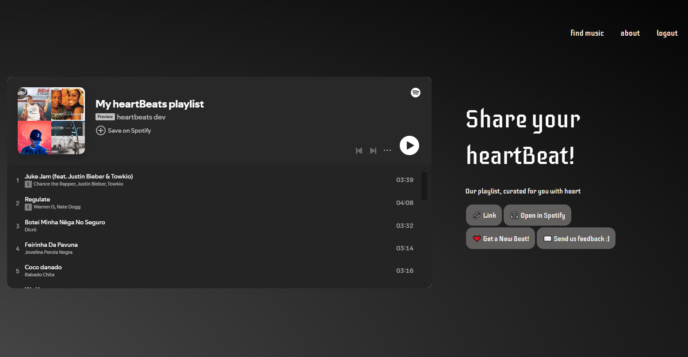

How it Works
Spotify Auth
A user clicks the login button on the main screen and is redirected to Spotify's authorization process. By authorizing HeartBeats to connect to their Spotify profile, the user gives the app access to their playlists, liked songs, and other metadata to best tailor a playlist to their liking.
Playlist Types
A user can select what type of playlist they want for their workout. Each playlist has a unique method of mapping heart rate to song BPM for different types of workouts. For example the standard playlist has a warm up and cooldown period that arranges songs in ascending and descending BPM around a target heart rate.
User Specific Options
The user now selects how intense they want their workout, which will raise the BPM ceiling accordingly. They input their age and the app will determine their target heart rate parameters based on ideal working heart rate research done by the Mayo Clinic. Lastly they can specify exactly how long they want their playlist to be (20-180 minutes).
Personalization
Finally, the user can select either to have the app generate their playlist based on their liked songs, or songs we think they will like in a selection of up to three different genres.
